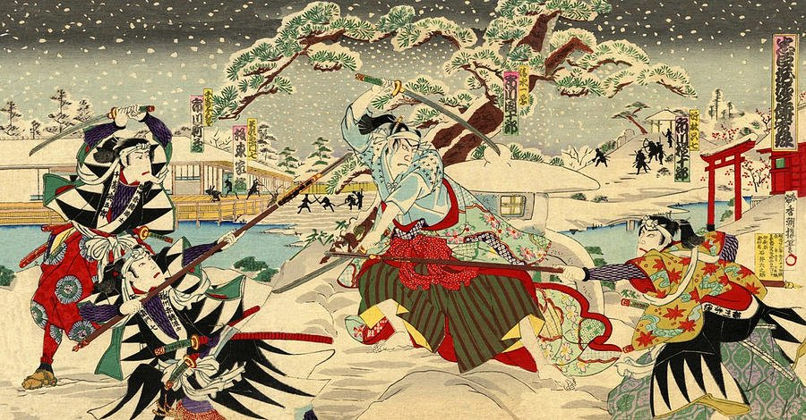
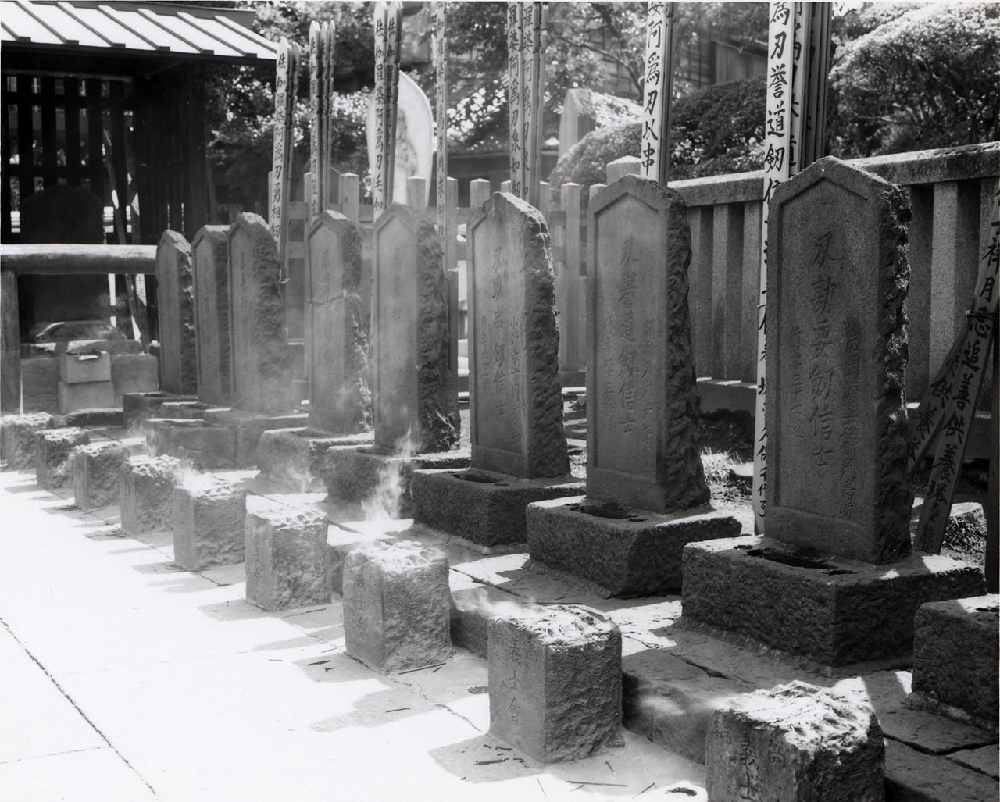

47 ронинов — одна из лучших историй о воинской чести
30 января 1703 года произошла знаменитая месть Ако,
или возмездие 47 ронинов — происшествие, на основе
которого было создано сначала народное предание,
а потом и многочисленные пьесы японского театра
кабуки. Эта история пережила не только несколько сотен лет,
но и множество экранизаций разной степени фантастичности.
Как же все было на самом деле? Читайте в нашей статье.
Время и место действия — Япония времен сегуната Токугавы
В начале XVIII века Япония представляла собой феодальное общество
с довольно необычным для нас укладом. Дело в том, что страной,
при живом императоре, управлял сегун — нечто вроде главнокомандующего войсками.
Формально он признавал над собой власть монарха, который считался сыном богини Аматерасу.
Однако все важные решения сегун принимал сам, без оглядки на мнение божественного потомка.
Во время описываемых событий страной правил Токугава Цунаеси, эксцентричный сегун,
сочетавший в своем мировоззрении конфуцианство и буддизм, правда, в диковинном виде.
От конфуцианства он взял любовь к ритуализации обыденной жизни, поэтому придворные обязаны
были досконально знать все церемонии и ни в коем случае не ошибиться в мелких деталях одежды или поведения.
От буддизма же Токугава взял сострадание к живым существам, правда понимал он его довольно странно.
Свое прозвище «Собачий сегун» Цунаеси получил не зря. Он под страхом смерти запретил подданным бить
и уж тем более убивать бродячих собак. Если пес забирался на участок крестьянина, тот даже не имел права
кричать на пса, а должен был вежливо попросить его уйти. За малейшее причинение вреда собакам крестьянина могли
лишить жизни. А однажды из за такого случая вообще казнили целую деревню.

Естественно, бродячие псы расплодились с ужасной скоростью и дикие стаи начали
нападать на людей, за что народ не особо любил своего правителя.
Завязка конфликта.
Именно ко двору этого помешанного на церемониале сегуна и были приглашены основные действующие лица — дайме
Асано Наганори, феодал из Ако, а также дайме по имени Камеи Сама. Они были довольно неопытны в планем церемоний,
поэтому их сразу определили к местному высокопоставленному чиновнику по имени Кира Есинака, который славился не
только скверным нравом, но и корыстолюбием.
Подарки, которые получил Кира от двух своих учеников, не удовлетворили его,
и он начал изводить их придирками и даже прямыми оскорблениями. Чиновник открыто пользовался
воим положением и тем, что за обнажение оружия в покоях сегуна провинившимся светила не только смертная казнь,
но и позор, падавший на весь его род.
Нападками Кира пытался выманить еще большие подарки. Дайме лишь терпели, но в какой-то момент
один из страдальцев, Камеи Сама, не выдержал, и сказал своим людям, что готов убить зарвавшегося чиновника.
Его люди посовещались и решили скинуться и принести церемониймейстеру подарки. Кира тут же показал свою продажность,
немедленно поменяв свое отношение к Камеи: он начал вежливо с ним разговаривать и даже извинился за прошлую
грубость — типичный вымогатель.
Но другой дайме, Асано Наганори, не догадался еще раз подкупить чиновника, что в итоге стоило им обоим жизни.
Однажды Асано не выдержал и, после того, как его в очередной раз назвали «неотесанной деревенщиной»,
то ли выхватил меч и рассек лицо Кире, то ли ткнул в глаз принесенным ножом.
Детали истории разнятся.
Нападение не удалось, Кира отделался лишь легкими ранами, но для Асано и его рода наступили темные времена.
Сам дайме был приговорен взбешенным сегуном к ритуальному самоубийству, а его самураи, лишившись хозяина,
стали ронинами — бродячими воинами. Семья же Асано была лишена имени клана и имущества, как опозоренная
поступком главы рода.
Ронины берутся за дело

Ронины чем то похожи на безземельных рыцарей в Европе, но со своими особенностями. Это были самураи,
лишившиеся покровительства своего господина, а значит и постоянного дохода. Они могли стать торговцами
(но это считалось позорным делом для воинов), а могли уйти в вольные поэты или музыканты. Последнее, впрочем,
требовало таланта, и далеко не у всех он был. Однако чаще всего бедный и неприкаянный воин становился разбойником
или наемным убийцей, поэтому ронинов в Японии того времени не особо жаловали.
После казни Асано осталось около двухсот самураев, неожиданно для себя ставших ронинами. И если большинство приняли
эту судьбу, то сорок семь во главе с советником Оиси Кураносукэ решили, что честь господина требует отмщения.
При этом они прекрасно понимали, что после мести их ждет неминуемая казнь, но пошли на это, руководствуясь кодексом
Бусидо, правилами поведения самурая.
Взявшись за дело, опозоренные воины, прежде всего, затаились, ведь Кира прекрасно понимал, что они могут отомстить
и был постоянно под охраной. Для маскировки ронины разъехались по Японии, ведя разгульный образ жизни. Сам же Оиси
вообще развелся с женой, взял себе наложницу и постоянно проводил время в пьянках, валяясь в грязи, а проходившие
мимо люди осыпали его презрительными насмешками.
Один человек из княжества Сацума и вовсе обозвал бывшего советника дураком и мерзавцем, недостойным звания самурая,
пнув спящего ногой и плюнув ему прямо в лицо. Естественно, слухи о таком поведении возможных мстителей дошли до Киры,
и со временем он расслабился, перестав так много сил уделять охране своей персоны.
А зря.
Месть сорока семи ронинов
30 января 1703 года ронины двумя отрядами по сигналу барабана ворвались в поместье Киры Еситаки в городе Эдо,
по пути перебив шестнадцать и ранив более двадцати человек.
Ворота было решено разбить топором, и чтобы окружающие люди не обеспокоились, к ним были посланы гонцы
с буквально таким посланием:
«Мы, ронины, состоявшие прежде на службе у Асано Такуми-но-Ками, собираемся этой ночью ворваться во дворец
Кира Кодзукэ-но–Сукэ, чтобы отомстить за нашего господина. Мы не ночные грабители и не хулиганы и не причиним
вреда соседним домам. Просим вас не беспокоиться».
Также, существует легенда, согласно которой ронины, чтобы отличать друг друга в темноте,
повязали головы белой тканью, и теперь в Японии такие повязки считаются знаком решительных намерений,
называются «Хатимаки», и надеваются перед атакой для поднятия боевого духа.
Услышав шум, Кира вместе с детьми и женой спрятался в чулане, и его долго не могли найти. Однако Оиси
все же отыскал его тайное убежище и, объявив о том, что пришел отомстить за своего господина, предложил
Кире сделать себе сэппуку. Тот отказался, после чего ему просто отрубили голову.
Собравшись вместе, ронины с отрубленной головой Киры в ведре прошли торжественным маршем по Эдо.
Отнеся свой окровавленный трофей в буддийский монастырь, на могилу хозяина, они сдались властям
и отправили самого младшего в качестве гонца в Ако, чтобы сообщить о свершившемся возмездии.
Конец сорока семи ронинов
Сегун оказался в щекотливом положении. С одной стороны, его власть попрали: в его собственной
столице был убит один из самых высокопоставленных чиновников. С другой — ронины поступили в духе
кодекса Бусидо, и стали невероятно популярны в народе. Токугава поступил мудро: он велел казнить
всех ронинов, но не на виселице, как воров и убийц, а посредством почетного ритуального самоубийства.
Клан Асано возвратил себе доброе имя, ему даже вернули часть владений. Род же Киры, наоборот, лишился
наследственной должности кокэ (мастера церемоний), его владения были урезаны, а внук и наследник рода,
Кира Еситака, был приговорен к смерти за то, что, будучи самураем, не смог защитить свою семью.
Сорок шесть ронинов вспороли себе животы и были похоронены рядом с господином, молодого же гонца, когда
он вернулся из Ако и тоже сдался властям, простили, и он прожил до 78 лет, после смерти заняв место рядом
с соратниками.
Любопытно, что рядом с сорока семи ронинами покоится еще один человек. После похорон жители Эдо приходили
в храм воздать дань богам. Прибыл сюда и уроженец провинции Сацума, тот самый, что когда-то плюнул в лежащего
на земле Оиси Кураносукэ. Узнав всю правду о поступке ронинов, и особенно Оиси, он воскликнул:
«Когда я нашел тебя пьяным в Киото, я не знал что ты готовишь план мщения врагу своего господина. Я считал
тебя бесчестным человеком, я пихнул тебя ногой и плюнул в лицо. Теперь я пришел сюда, чтобы просить прощения и искупить свою вину».
Произнеся этот монолог, он вынул короткий меч и пронзил себе живот. Настоятель храма решил похоронить этого человека
рядом с сорока семью воинами.

Самое же удивительное, что поступок ронинов осудил авторитетный знаток кодекса самураев того времени. Он посчитал, что они должны были
тут же бросится мстить, и погибнуть, не достигнув цели, ведь по его мнению, для самурая важен порыв, а никак не разумное планирование мести.
Как бы то ни было, эта история приносит нам из глубины веков дух средневековой Японии — загадочной, непостижимой и кровавой.